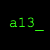

 atar13's repository
Add this repo to:
Cydia
,
Sileo
, or
Zebra
Add to Cydia/Sileo
Add to Zebra
Packages
Houdini
Only shows lock screen clock when the user taps or holds down on the lock screen.
More info